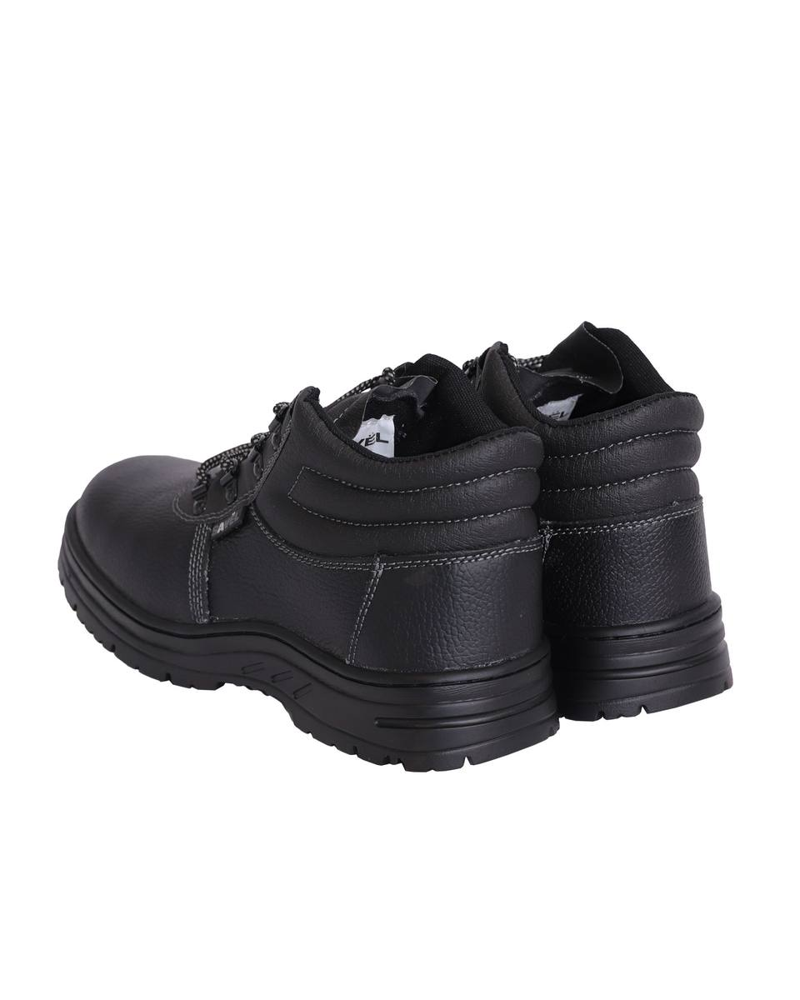
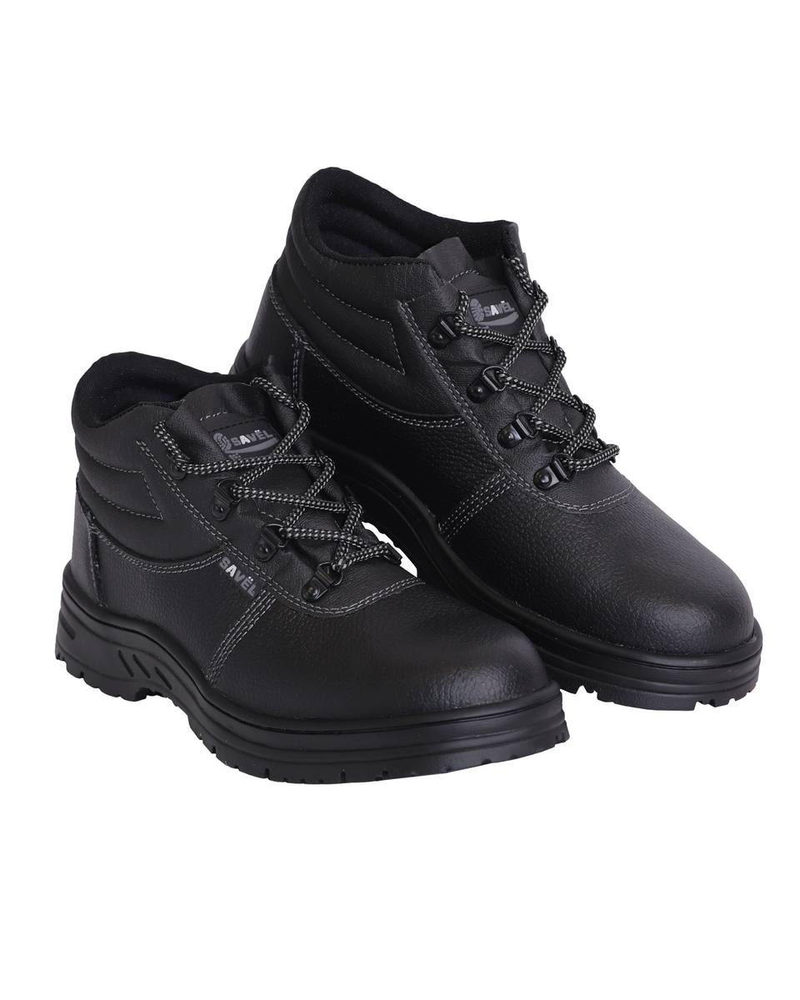
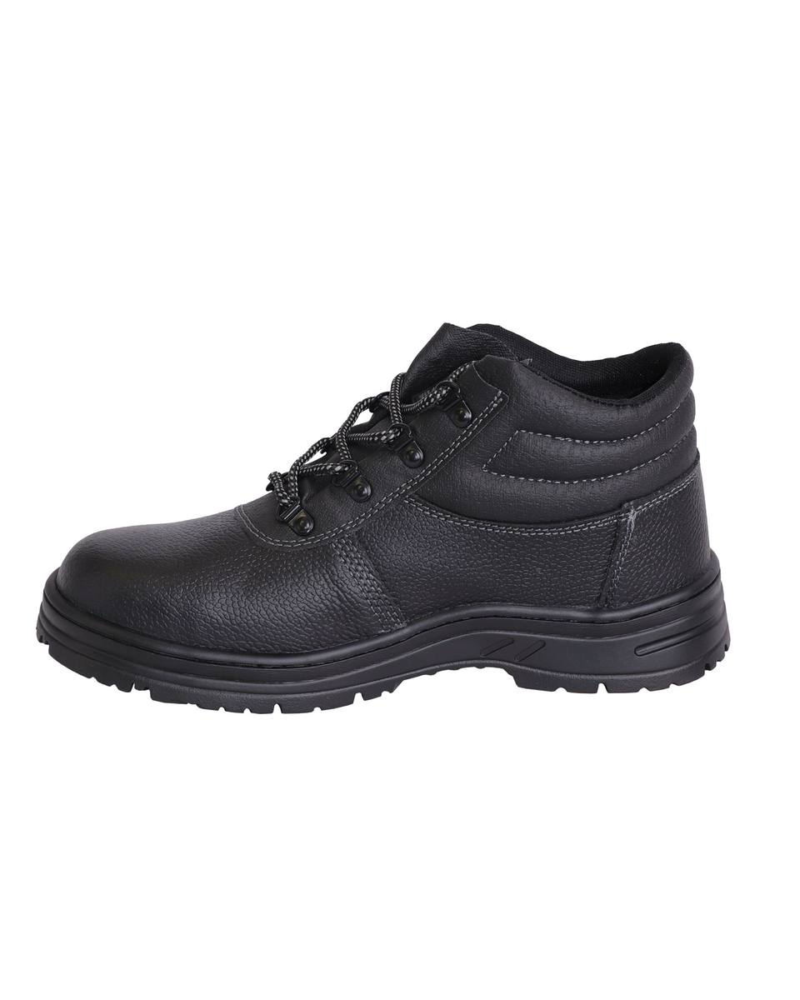
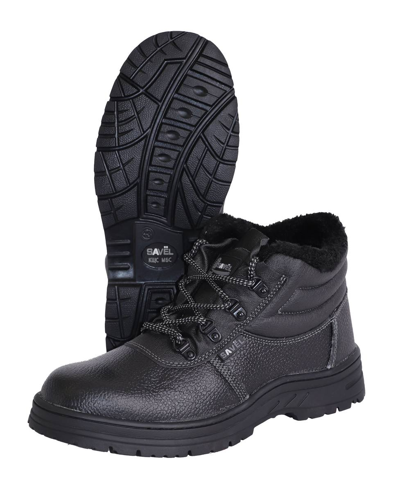
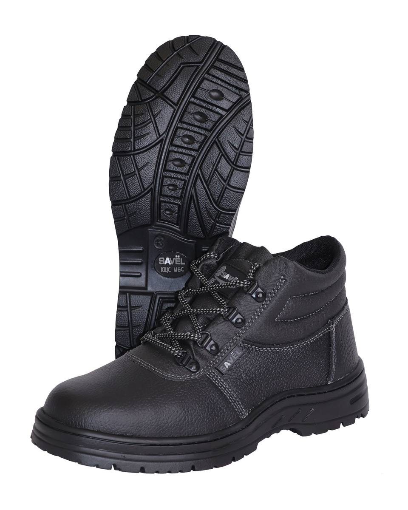
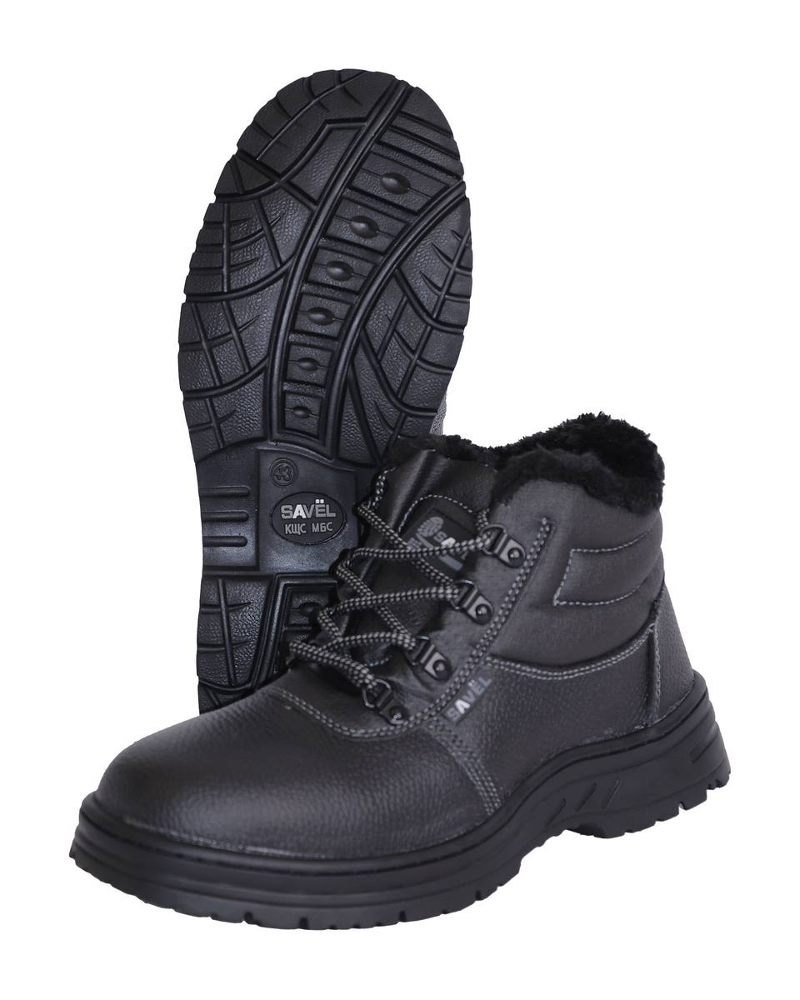
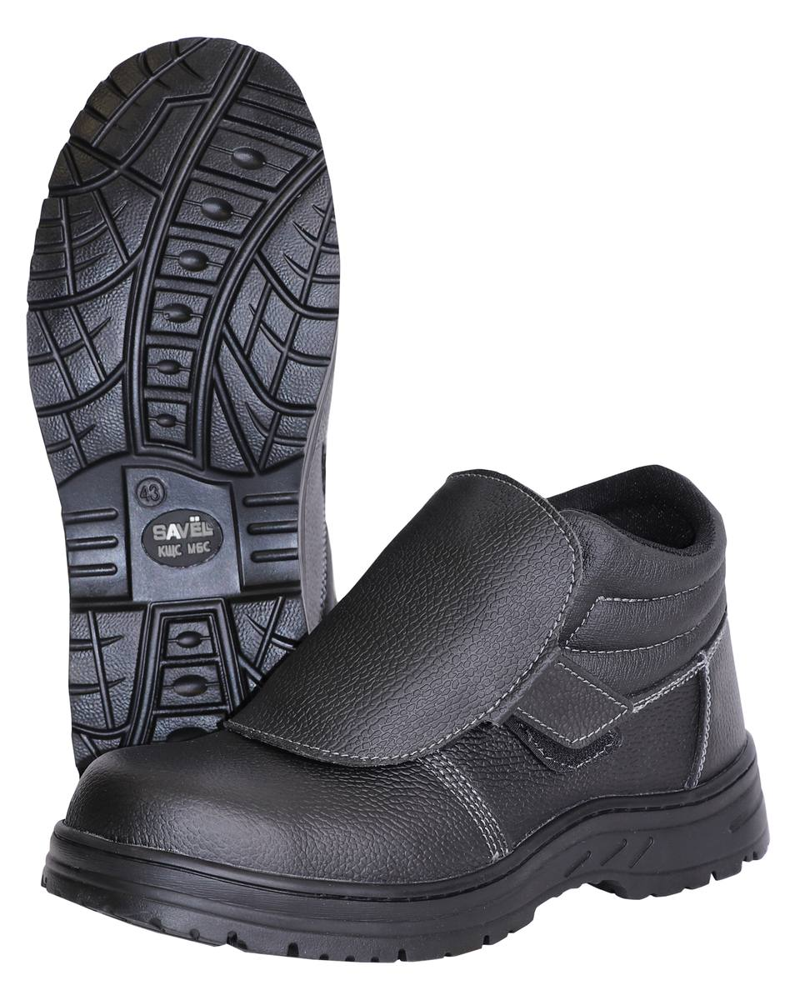
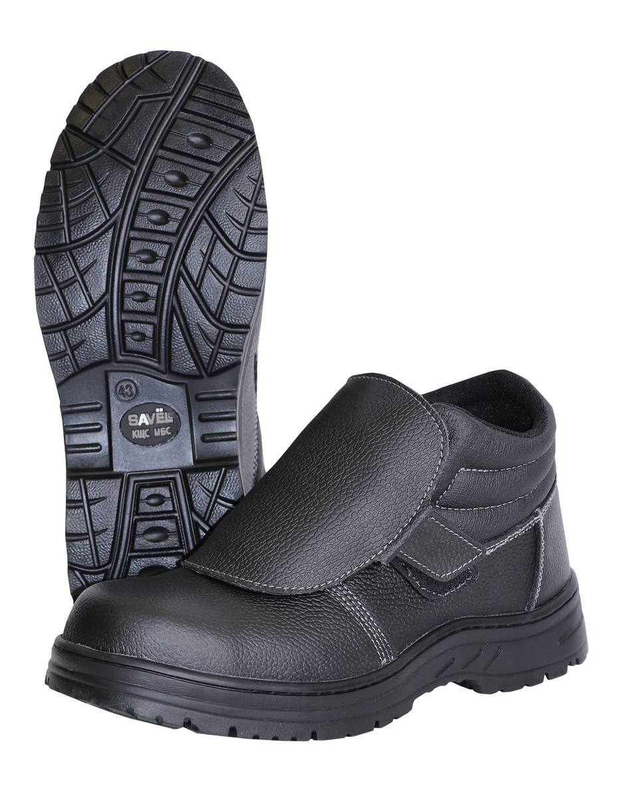
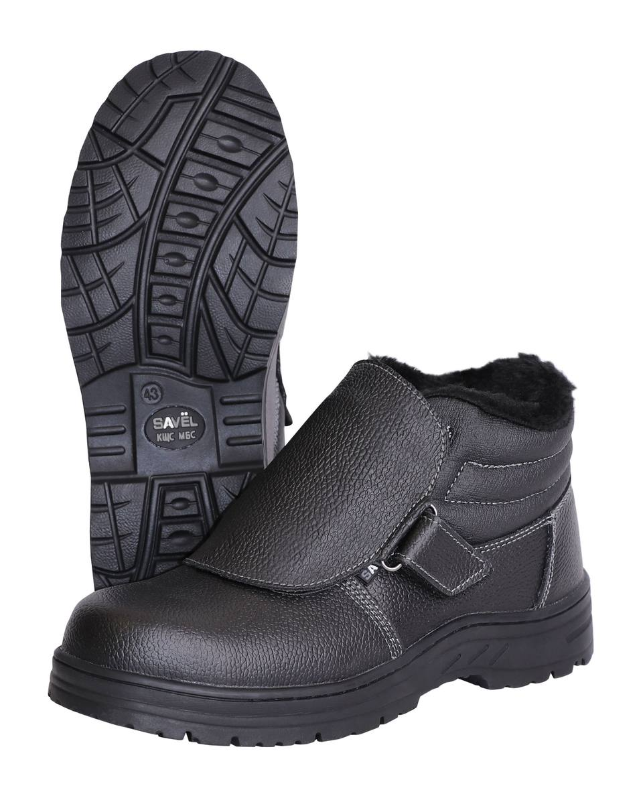

Ботинки «Сириус-Титан»
Арт. 140013 — Ботинки , кожа, МП МС, Нитрил
Ботинки , кожа, МП МС, Нитрил
Ботинки , кожа, МП МС, иск. мех, Нитрил Ботинки , кожа, МП, Нитрил
Ботинки , кожа, МП, Нитрил Ботинки , кожа, МП, иск. мех, Нитрил
Ботинки , кожа, МП, иск. мех, Нитрил
Ботинки , кожа, Нитрил Ботинки , кожа, ПКП МС, Нитрил
Ботинки , кожа, ПКП МС, Нитрил
Ботинки , кожа, ПКП МС, иск. мех, Нитрил Ботинки , кожа, ПКП, Нитрил
Ботинки , кожа, ПКП, Нитрил Ботинки , кожа, ПКП, иск. мех, Нитрил
Ботинки , кожа, ПКП, иск. мех, Нитрил Ботинки , кожа, иск. мех, Нитрил
Ботинки , кожа, иск. мех, Нитрил
Ботинки сварщика , кожа, МП МС, Нитрил
Ботинки сварщика , кожа, ПКП, Нитрил
Ботинки сварщика зимние , кожа, ПКП, иск.мех, НитрилВерх обуви из кожи со специальным покрытием для защиты от ОПЗ, МВ.
Важное достоинство этой обуви – двойной (комбинированный) метод крепления, при котором к химическому соединению деталей добавляется механический. Это придает дополнительную прочность соединению верха обуви и подошвы, улучшает эксплуатационные свойства и прочность крепления.
Рабочая обувь клеепрошивного метода крепления универсальна в назначении для различных отраслей промышленности, а также для повседневной носки.
Нитрил — синтетический каучук (резина). Характеризуется отличной устойчивостью к воздействию высоких температур (пр
| Артикул | Вариант / цвет |
|---|---|
| 140013 | Ботинки , кожа, МП МС, Нитрил |
| 140082 | Ботинки , кожа, МП МС, иск. мех, Нитрил |
| 122048 | Ботинки , кожа, МП, Нитрил |
| 122063 | Ботинки , кожа, МП, иск. мех, Нитрил |
| 122492 | Ботинки , кожа, Нитрил |
| 140031 | Ботинки , кожа, ПКП МС, Нитрил |
| 140100 | Ботинки , кожа, ПКП МС, иск. мех, Нитрил |
| 126504 | Ботинки , кожа, ПКП, Нитрил |
| 130808 | Ботинки , кожа, ПКП, иск. мех, Нитрил |
| 122507 | Ботинки , кожа, иск. мех, Нитрил |
| 152874 | Ботинки сварщика , кожа, МП МС, Нитрил |
| 142840 | Ботинки сварщика , кожа, ПКП, Нитрил |
| 142823 | Ботинки сварщика зимние , кожа, ПКП, иск.мех, Нитрил |